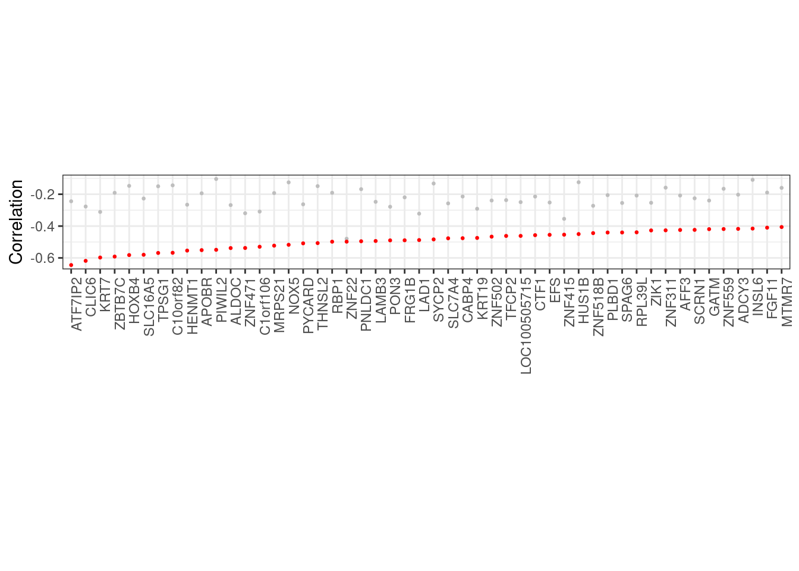
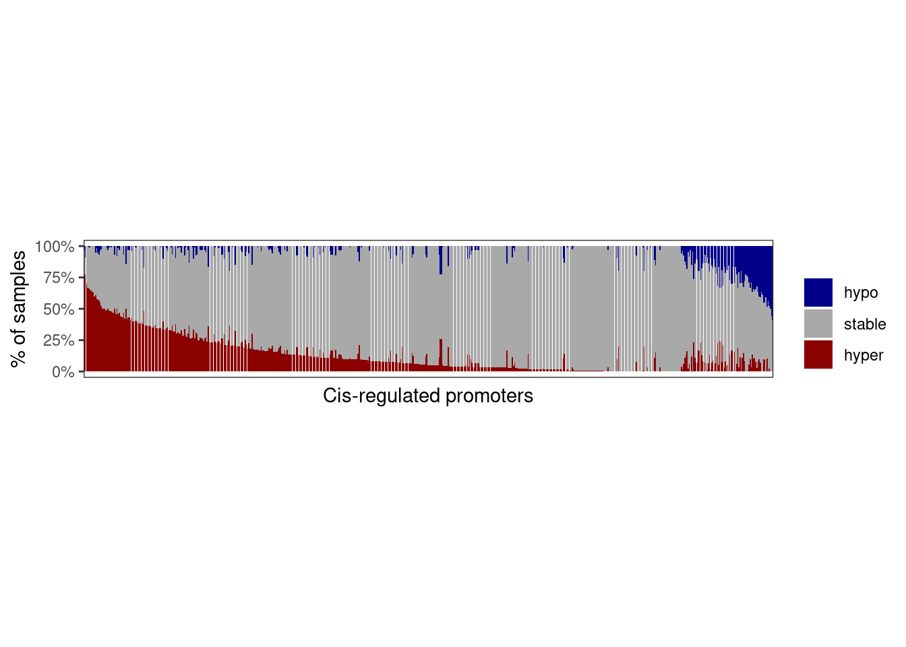
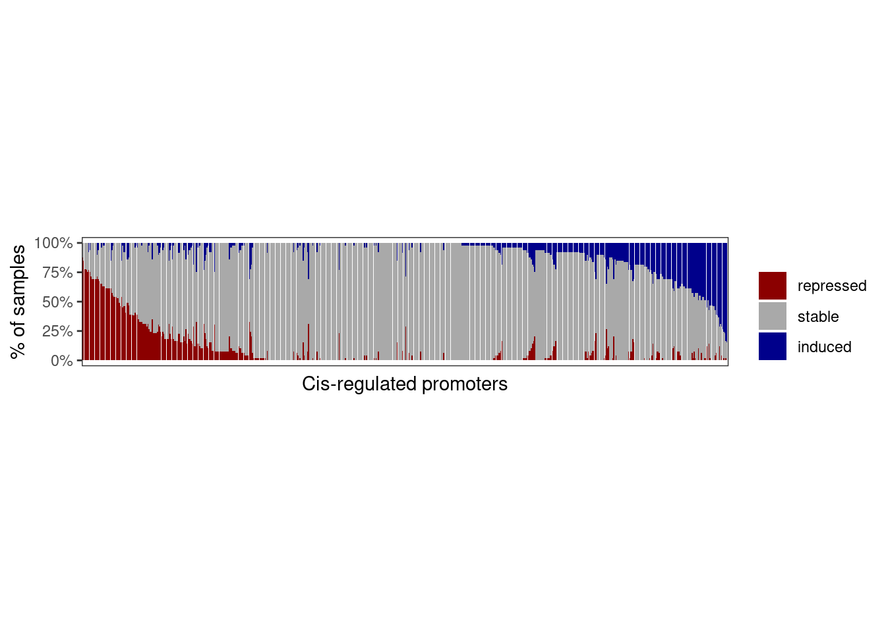
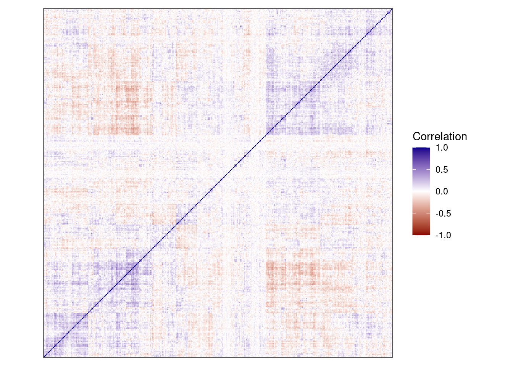
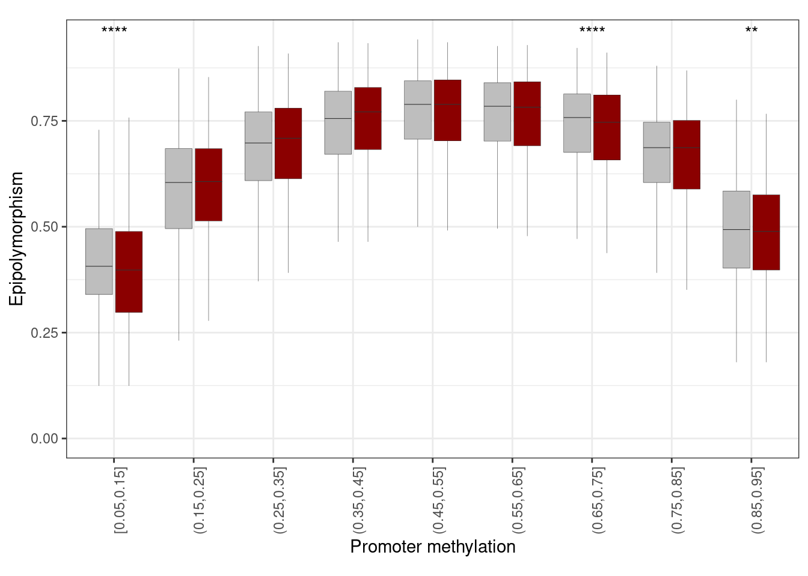
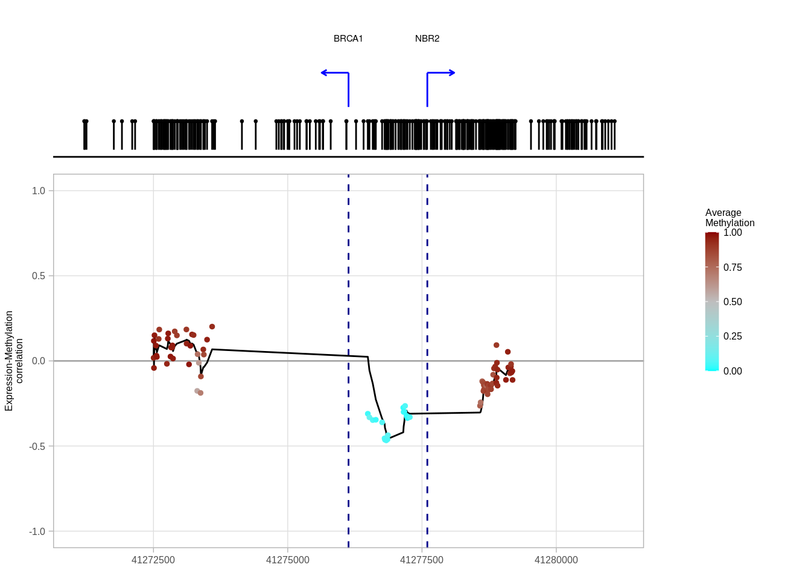
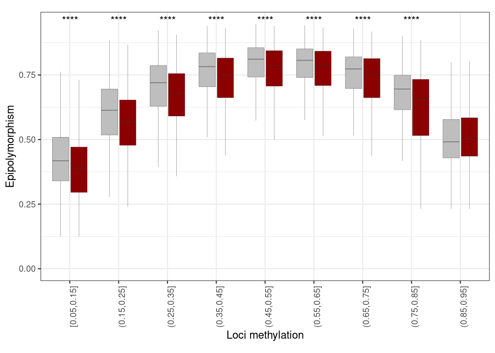
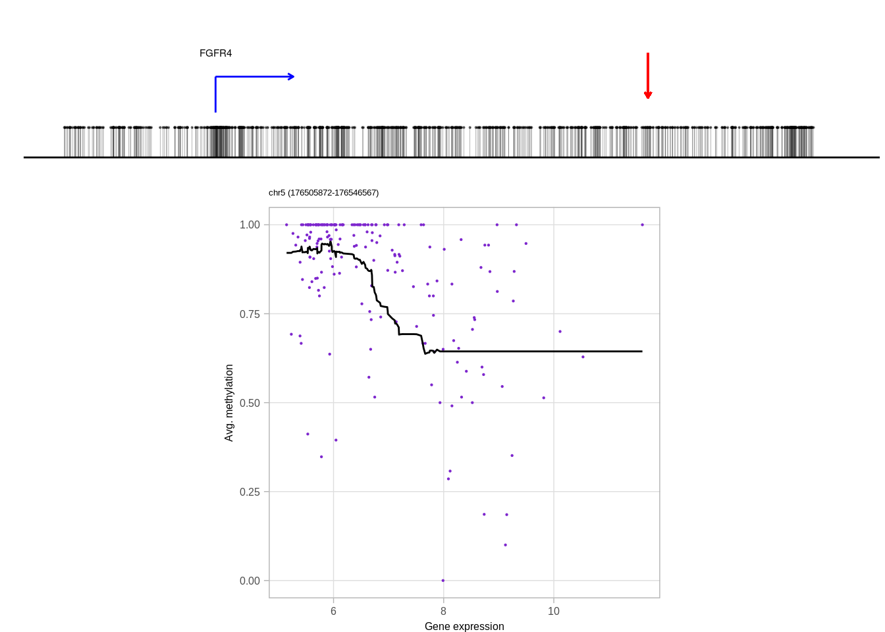
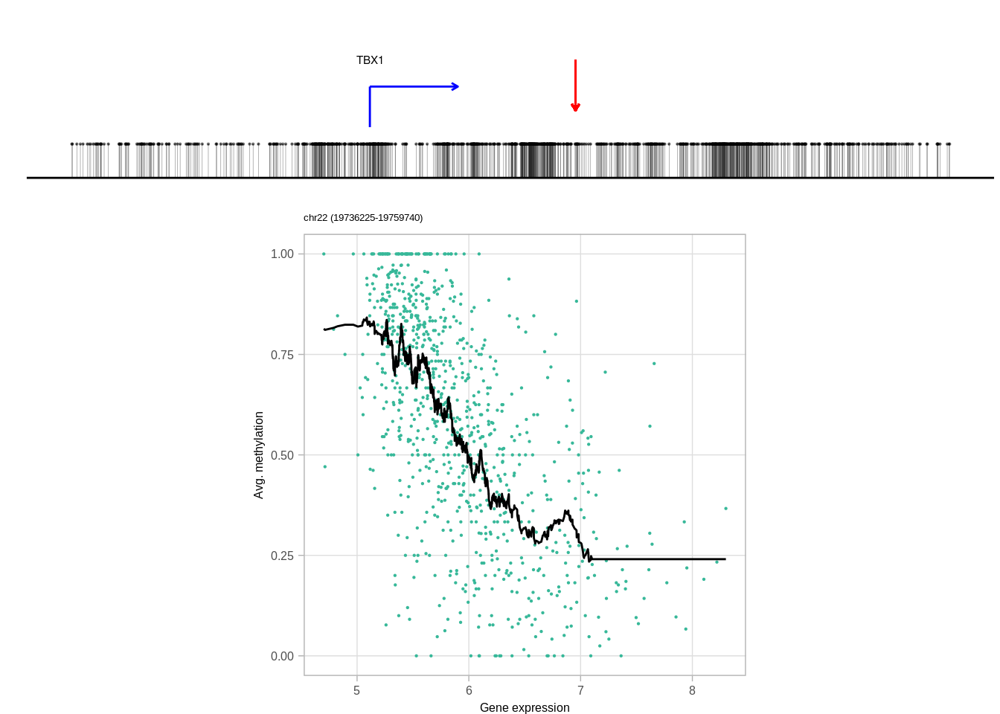
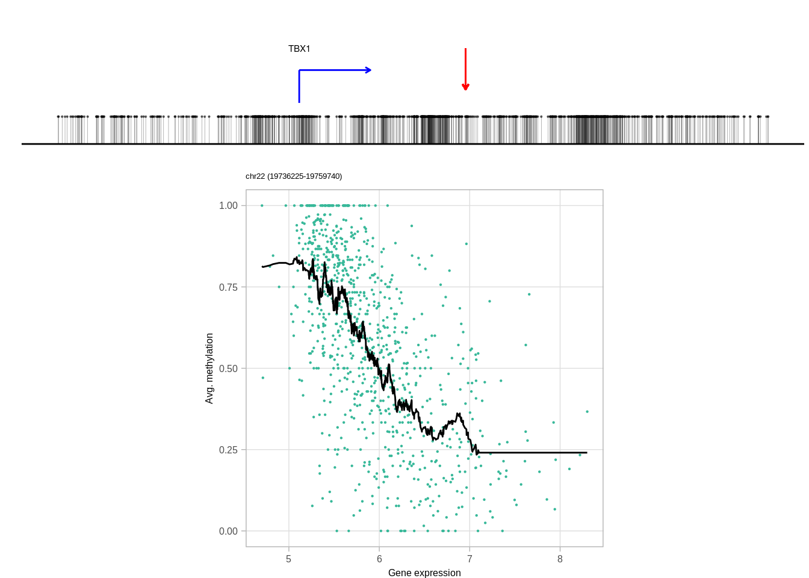

10 Methylation - Expression in cis
source(here::here("scripts/init.R"))10.0.1 Remove TME genes
We start by identifying genes that are strongly correlated to TME (immune and CAF) in the expression-methylation correlation clusters. Our TME normalization cleaned most of their correlations with methylation, but it is not perfect we don't want their in cis effects to mask other more interesting expression-methylation correlations.
TME_genes <- {
ER_pos_TME_genes <- get_TME_genes(readr::read_rds(here("data/ER_positive_norm_meth.rds"))$em_cross_clust)
ER_neg_TME_genes <- get_TME_genes(readr::read_rds(here("data/ER_negative_norm_meth.rds"))$em_cross_clust)
normal_TME_genes <- get_TME_genes(readr::read_rds(here("data/normal_norm_meth.rds"))$em_cross_clust)
unique(c(ER_pos_TME_genes, ER_neg_TME_genes, normal_TME_genes))
} %cache_rds% here("data/TME_genes.rds")
length(TME_genes)## [1] 2194expr_mat <- get_gene_expression_mat() %>% expr_intervs_to_mat()expr_mat_f <- expr_mat[!(rownames(expr_mat) %in% TME_genes), ]10.0.2 Load normalized methylation and separate it to promoters and non-promoters
all_norm_meth <- fread(here("data/all_norm_meth.tsv")) %>% as_tibble() prom_meth <- all_norm_meth %>% inner_join(promoter_intervs %>% distinct(chrom, start, end), by = c("chrom", "start", "end"))non_prom_meth <- all_norm_meth %>% anti_join(promoter_intervs %>% distinct(chrom, start, end), by = c("chrom", "start", "end"))prom_intervs_f <- resolve_alt_promoters(prom_meth %>% select(chrom:end))10.1 Cis candidates: promoters
We use methylayer to identify promoters that are correlated in cis to the expression of their gene:
ER_positive_prom_mat <- prom_meth %>% select(chrom:end, any_of(ER_positive_samples)) %>% intervs_to_mat()
ER_negative_prom_mat <- prom_meth %>% select(chrom:end, any_of(ER_negative_samples)) %>% intervs_to_mat()
normal_prom_mat <- prom_meth %>% select(chrom:end, any_of(normal_samples)) %>% intervs_to_mat()
dim(ER_positive_prom_mat)## [1] 15693 1108dim(ER_negative_prom_mat)## [1] 15693 310dim(normal_prom_mat)## [1] 15693 92prom_cis_cands <- bind_rows(
cis_em_promoters(ER_positive_prom_mat, expr_mat_f, prom_intervs_f, min_samples=50) %>% mutate(ER = "ER+"),
cis_em_promoters(ER_negative_prom_mat, expr_mat_f, prom_intervs_f, min_samples=50) %>% mutate(ER = "ER-"),
cis_em_promoters(normal_prom_mat, expr_mat_f, prom_intervs_f, min_samples=50) %>% mutate(ER = "normal") ) %cache_df% here("data/promoter_cis_cands.tsv") %>% as_tibble() max(prom_cis_cands$r)## [1] 9360df <- prom_cis_cands %>% filter(r == 1) %>% distinct(fdr, n_fdr, ER)
df_fdr <- prom_cis_cands %>%
filter(fdr < 0.05) %>%
group_by(ER) %>%
filter(fdr == max(fdr)) %>%
distinct(fdr, n_fdr, ER)
df## # A tibble: 3 x 3
## fdr n_fdr ER
## 1 0.002364066 423 ER+
## 2 0.005405405 185 ER-
## 3 0.250000000 4 normaldf_fdr## # A tibble: 2 x 3
## # groups: ER
## fdr n_fdr ER
## 1 0.04938272 1053 ER+
## 2 0.04910714 448 ER-glue("we identified {n_top_ER_pos} promoters in ER+ and {n_top_ER_neg} in ER- (FDR<0.01; {n_fdr_ER_pos} in ER+ and {n_fdr_ER_neg} in ER- if increasing FDR to <0.05)",
n_top_ER_pos = df$n_fdr[df$ER == "ER+"],
n_top_ER_neg = df$n_fdr[df$ER == "ER-"],
n_fdr_ER_pos = df_fdr$n_fdr[df_fdr$ER == "ER+"],
n_fdr_ER_neg = df_fdr$n_fdr[df_fdr$ER == "ER-"])## we identified 423 promoters in ER+ and 185 in ER- (FDR<0.01; 1053 in ER+ and 448 in ER- if increasing FDR to <0.05)10.1.1 Plot correlation of top cis-regulated promoter candidates
10.1.1.1 Figure 3A
options(repr.plot.width = 12, repr.plot.height = 3)
p_top_cands <- prom_cis_cands %>%
filter(r == 1) %>%
mutate(diff = abs(best - kth)) %>%
filter(ER == "ER+") %>%
arrange(cor) %>%
slice(1:50) %>%
ggplot(aes(x = reorder(name, cor), y = kth)) +
geom_point(size = 0.5, color = "gray") +
xlab("") +
ylab("Correlation") +
geom_point(aes(y = cor), color = "red", size = 0.5) +
theme(axis.text.x = element_text(size = 5, angle = 90, hjust = 1))
p_top_cands + theme_bw() + vertical_labs() + theme(aspect.ratio = 0.13)
10.1.1.2 Figure 3B
options(repr.plot.width = 4, repr.plot.height = 4)
p_diff <- prom_cis_cands %>%
mutate(diff = ifelse(r == 1, kth - cor, best - cor)) %>%
ggplot(aes(x = diff, y = (1 - ..y..) * nrow(prom_cis_cands))) +
stat_ecdf() +
scale_y_log10() +
ylab("# of promoters") +
xlab("Diff") +
geom_vline(xintercept = 0, color = "red", linetype = "dashed") +
theme(aspect.ratio = 1)
p_diff + theme_bw()## Warning: Transformation introduced infinite values in continuous y-axis
10.1.2 Annotation of cis-regulated promoters
loci <- prom_cis_cands %>%
group_by(chrom, start, end, name) %>%
summarise(type = ifelse(any(r == 1), "reg", "bg"), .groups = "drop") %>%
group_by(chrom, start, end) %>%
summarise(type = ifelse(any(type == "reg"), "reg", "bg"), .groups = "drop")
loci_annot <- loci %>%
select(chrom, start, end, everything()) %>%
annotate_loci() %cache_df% here("data/promoter_cis_cands_loci.tsv") %>% as_tibble()10.1.2.1 Extended Data Figure 8B
options(repr.plot.width = 4, repr.plot.height = 4)
p_cg_cont <- loci_annot %>%
distinct(chrom, start, end, type, cg_cont) %>%
ggplot(aes(x = cg_cont, color = type, linetype = type)) +
geom_density() +
scale_color_manual("", values = c("darkgray", "darkred"), guide = FALSE) +
scale_linetype_manual("", values = c("dashed", "solid"), guide = FALSE) +
xlab("CpG content (500 bp)") +
ylab("Density") +
theme(aspect.ratio = 1)
p_cg_cont## Warning: It is deprecated to specify `guide = FALSE` to remove a guide. Please
## use `guide = "none"` instead.
## Warning: It is deprecated to specify `guide = FALSE` to remove a guide. Please
## use `guide = "none"` instead.
loci_annot %>%
filter(type == "reg") %>%
mutate(cg_cont = cut(cg_cont, c(0,0.04,0.08,0.2), include.lowest=TRUE)) %>%
count(cg_cont) %>%
mutate(p = scales::percent(n / sum(n)))## # A tibble: 3 x 3
## cg_cont n p
## 1 [0,0.04] 79 16%
## 2 (0.04,0.08] 254 50%
## 3 (0.08,0.2] 170 34%mean_meth <- loci %>%
left_join(get_all_summary_meth(), by = c("chrom", "start", "end"))10.1.2.2 Extended Data Figure 8A
options(repr.plot.width = 4, repr.plot.height = 4)
df <- mean_meth %>%
gather("ER", "meth", -(chrom:end), -type) %>%
mutate(ER = factor(ER, levels = c("normal", "ER+", "ER-"))) %>%
mutate(type = forcats::fct_recode(type, "Background" = "bg", "Cis-regulated\npromoters" = "reg"))
p_meth <- df %>%
ggplot(aes(x = type, y = meth, fill = ER)) +
geom_boxplot(linewidth=0.1, fatten=0.5, outlier.size = 0.05) +
scale_fill_manual("", values = annot_colors$ER1, guide = FALSE) +
xlab("") +
ylab("Methylation") +
theme(aspect.ratio = 1) +
vertical_labs()## Warning: Ignoring unknown parameters: linewidthp_meth + theme_bw() + theme(aspect.ratio = 1) + vertical_labs()## Warning: It is deprecated to specify `guide = FALSE` to remove a guide. Please
## use `guide = "none"` instead.
mean_meth %>% count(type)## # A tibble: 2 x 2
## type n
## 1 bg 8857
## 2 reg 503mean_meth %>%
gather("ER", "meth", -(chrom:type) ) %>%
group_by(type, ER) %>%
summarise(
m = mean(meth, na.rm=TRUE),
sd = sd(meth, na.rm=TRUE),
.groups = "drop"
)## # A tibble: 6 x 4
## type ER m sd
## 1 bg ER- 0.08122300 0.1712618
## 2 bg ER+ 0.08793721 0.1776411
## 3 bg normal 0.06807298 0.1683802
## 4 reg ER- 0.18820936 0.2144194
## 5 reg ER+ 0.20382981 0.2206950
## 6 reg normal 0.15027054 0.2219690mean_meth %>%
gather("ER", "meth", -(chrom:type) ) %>%
mutate(tumor_normal = ifelse(ER == "normal", "normal", "tumor")) %>%
group_by(type, tumor_normal) %>%
summarise(
m = mean(meth, na.rm=TRUE),
sd = sd(meth, na.rm=TRUE),
.groups = "drop"
)## # A tibble: 4 x 4
## type tumor_normal m sd
## 1 bg normal 0.06807298 0.1683802
## 2 bg tumor 0.08458010 0.1745080
## 3 reg normal 0.15027054 0.2219690
## 4 reg tumor 0.19601959 0.217611910.1.3 Gene expression of cis-regulated promoters
mean_expr <- get_mean_expression()raw_meth <- get_promoter_avg_meth()top_cands <- prom_cis_cands %>%
mutate(diff = abs(best - kth)) %>%
filter(r == 1)matched_meth <- top_cands %>%
distinct(chrom, start, end, name) %>%
inner_join(raw_meth) %>%
gather("samp", "meth", -(chrom:name)) %>%
left_join(samp_data %>% select(samp, patient, ER = ER1)) %>%
filter(!is.na(ER)) %>%
select(-samp) %>%
spread(ER, meth) %>%
filter(!is.na(normal)) %>%
left_join(top_cands %>% select(name, ER)) %>%
mutate(diff = ifelse(ER == "ER+", `ER+` - normal, `ER-` - normal))## Joining, by = c("chrom", "start", "end")## Joining, by = "samp"## Joining, by = "name"matched_meth_df <- matched_meth %>%
filter(!is.na(diff)) %>%
mutate(diff_grp = cut(diff, breaks = c(-1, -0.2, 0.2, 1), include.lowest = TRUE, labels = c("hypo", "stable", "hyper"))) %>%
unite("name", name, ER) %>%
count(name, diff_grp) %>%
group_by(name) %>%
mutate(p = n / sum(n)) %>%
tidyr::complete(diff_grp, fill = list(p = 0)) %>%
filter(!is.na(diff_grp)) %>%
mutate(p_hypo = p[diff_grp == "hypo"], p_hyper = p[diff_grp == "hyper"], p_stable = p[diff_grp == "stable"]) %>%
ungroup() %>%
arrange((p_hypo - p_hyper) / (p_stable + 1)) %>%
mutate(name = forcats::fct_inorder(name)) cat(sprintf("# of meth genes: %s", matched_meth_df %>% distinct(name) %>% nrow() ) )## # of meth genes: 61210.1.3.1 Figure 3C
options(repr.plot.width = 10, repr.plot.height = 4)
p_meth_dist <- matched_meth_df %>%
ggplot(aes(x = name, y = p, fill = diff_grp)) +
geom_col() +
scale_fill_manual("", values = c(hypo = "darkblue", stable = "darkgray", hyper = "darkred")) +
theme(panel.grid.major = element_blank(), panel.grid.minor = element_blank(), panel.background = element_blank(), axis.text.x = element_blank(), axis.ticks.x = element_blank(), aspect.ratio = 0.4) +
scale_y_continuous(labels = scales::percent) +
ylab("% of samples") +
xlab("Cis-regulated promoters")
p_meth_dist + theme_bw() + theme(panel.grid.major = element_blank(), panel.grid.minor = element_blank(), panel.background = element_blank(), axis.text.x = element_blank(), axis.ticks.x = element_blank(), aspect.ratio = 0.2)
expr_mat <- get_gene_expression_mat()matched_expr <- expr_mat %>%
filter(name %in% top_cands$name) %>%
gather("samp", "expr", -(chrom:name3.chr)) %>%
left_join(samp_data %>% select(samp, patient, ER = ER1)) %>%
filter(!is.na(ER)) %>%
select(-samp) %>%
spread(ER, expr) %>%
filter(!is.na(normal)) %>%
left_join(top_cands %>% select(name, ER))## Joining, by = "samp"## Joining, by = "name"matched_expr <- matched_expr %>% mutate(diff = ifelse(ER == "ER+", `ER+` - normal, `ER-` - normal))matched_expr_df <- matched_expr %>%
filter(!is.na(diff)) %>%
mutate(diff_grp = cut(diff, breaks = c(-20, -1, 1, 20), include.lowest = TRUE, labels = c("repressed", "stable", "induced"))) %>%
unite("name", name, ER) %>%
count(name, diff_grp) %>%
group_by(name) %>%
mutate(p = n / sum(n)) %>%
tidyr::complete(diff_grp, fill = list(p = 0)) %>%
filter(!is.na(diff_grp)) %>%
mutate(p_repressed = p[diff_grp == "repressed"], p_induced = p[diff_grp == "induced"], p_stable = p[diff_grp == "stable"]) %>%
ungroup() %>%
arrange((p_induced - p_repressed) / (p_stable + 1)) %>%
mutate(name = forcats::fct_inorder(name))
cat(sprintf("# of expr genes: %s", matched_expr_df %>% distinct(name) %>% nrow() ) )## # of expr genes: 61210.1.3.2 Figure 3D
options(repr.plot.width = 10, repr.plot.height = 4)
p_expr_dist <- matched_expr_df %>%
mutate(diff_grp = factor(diff_grp, levels = rev(c("repressed", "stable", "induced")))) %>%
ggplot(aes(x = name, y = p, fill = diff_grp)) +
geom_col() +
scale_fill_manual("", values = c(repressed = "darkred", stable = "darkgray", induced = "darkblue")) +
theme(panel.grid.major = element_blank(), panel.grid.minor = element_blank(), panel.background = element_blank(), axis.text.x = element_blank(), axis.ticks.x = element_blank(), aspect.ratio = 0.4) +
scale_y_continuous(labels = scales::percent) +
ylab("% of samples") +
xlab("Cis-regulated promoters")
p_expr_dist + theme_bw() + theme(panel.grid.major = element_blank(), panel.grid.minor = element_blank(), panel.background = element_blank(), axis.text.x = element_blank(), axis.ticks.x = element_blank(), aspect.ratio = 0.2) 
10.1.4 Correlation between cis-regulated genes
10.1.4.1 Extended Data Figure 8C
cands_expr <- expr_mat %>%
filter(name %in% (top_cands %>% filter(ER == "ER+") %>% pull(name))) %>%
select(any_of(c("name", ER_positive_samples))) %>%
as.data.frame() %>%
column_to_rownames("name") %>%
as.matrix()cm <- tgs_cor(t(cands_expr), pairwise.complete.obs = TRUE)
hc <- hclust(tgs_dist(cm), method = "ward.D2")options(repr.plot.width = 10, repr.plot.height = 10)
p_cor <- tgutil::tgplot_heatmap(cm[hc$order, hc$order]) +
scale_fill_gradientn("Correlation", colors = c("darkred", "white", "darkblue"), limits = c(-1, 1)) +
theme(axis.text.x = element_blank(), axis.text.y = element_blank(), aspect.ratio = 1)## Warning: The `x` argument of `as_tibble.matrix()` must have unique column names if `.name_repair` is omitted as of tibble 2.0.0.
## Using compatibility `.name_repair`.p_cor
dim(cm)## [1] 423 423options(repr.plot.width = 4, repr.plot.height = 4)
cm1 <- cm
diag(cm1) <- NA
maxs <- matrixStats::rowMaxs(cm1, na.rm=TRUE)
sum(maxs < 0.5)## [1] 392plot(density(maxs))
10.2 Epipolymorphism of cis-regulated promoters
prom_epipoly <- get_promoter_cis_reg_epipoly()10.2.0.1 Figure 3F
options(repr.plot.width = 10, repr.plot.height = 6)
p_prom_epipoly <- prom_epipoly %>%
mutate(pat_meth = cut(pat_meth, seq(0.05, 1, 0.1), include.lowest = TRUE)) %>%
filter(!is.na(pat_meth)) %>%
filter(!is.na(epipoly), !is.na(type)) %>%
ggplot(aes(x = pat_meth, y = epipoly, fill = type)) +
geom_boxplot(outlier.shape = NA, outlier.size = 0.05, lwd =0.1) +
scale_fill_manual(values = c(bg = "gray", reg = "darkred"), guide = FALSE) +
vertical_labs() +
xlab("Promoter methylation") +
ylab("Epipolymorphism") +
ggpubr::stat_compare_means(label = "p.signif", hide.ns = TRUE, method = "wilcox.test", method.args = list(alternative = "less")) +
theme(aspect.ratio = 0.6)
p_prom_epipoly + theme_bw() + vertical_labs() + theme(aspect.ratio = 0.6)## Warning: It is deprecated to specify `guide = FALSE` to remove a guide. Please
## use `guide = "none"` instead.
10.3 Promoter examples
10.3.1 BRCA1
brca_cors <- methylayer:::gene_promoter_cors("BRCA1", ER_negative_prom_mat, expr_mat_f, prom_intervs_f)10.3.1.1 Extended Data Figure 8E
options(repr.plot.width = 4, repr.plot.height = 7)
p_brca_gene_cors <- brca_cors %>%
slice(1:25) %>%
ggplot(aes(x=reorder(promoter, -cor), y=cor)) + geom_col() + ylab("Correlation to BRCA1 expression in ER-") + xlab("Promoters") + coord_flip()
p_brca_gene_cors + theme_bw()
10.3.1.2 Figure 3E
genes <- c("KRT7", "CABP4", "BRCA1")
prom_cis_cands <- fread(here("data/promoter_cis_cands.tsv")) %>% as_tibble()
example_cands <- map_dfr(genes, ~ get_promoter_cand_interval(prom_cis_cands, .x, "ER+"))## Joining, by = c("name", "chrom", "start", "end")## Joining, by = "full_name"## Joining, by = c("name", "chrom", "start", "end")## Joining, by = "full_name"## Joining, by = c("name", "chrom", "start", "end")## Joining, by = "full_name"cg_meth <- get_cis_promoter_examples_cg_meth(genes = genes)options(repr.plot.width = 12, repr.plot.height = 7)
krt7_p <- plot_cis_promoter_example(example_cands %>% filter(name == "KRT7"), cg_meth, "ER+", resolution = 5e3, plot_all_tss_lines = TRUE)## Joining, by = c("samp", "name")## Joining, by = c("chrom", "start", "end")## Warning: `guides(<scale> = FALSE)` is deprecated. Please use `guides(<scale> =
## "none")` instead.## Warning in grid.Call(C_stringMetric, as.graphicsAnnot(x$label)): font family
## 'Arial' not found in PostScript font database
## Warning in grid.Call(C_stringMetric, as.graphicsAnnot(x$label)): font family
## 'Arial' not found in PostScript font database
## Warning in grid.Call(C_stringMetric, as.graphicsAnnot(x$label)): font family
## 'Arial' not found in PostScript font database
## Warning in grid.Call(C_stringMetric, as.graphicsAnnot(x$label)): font family
## 'Arial' not found in PostScript font database
## Warning in grid.Call(C_stringMetric, as.graphicsAnnot(x$label)): font family
## 'Arial' not found in PostScript font database
## Warning in grid.Call(C_stringMetric, as.graphicsAnnot(x$label)): font family
## 'Arial' not found in PostScript font database
## Warning in grid.Call(C_stringMetric, as.graphicsAnnot(x$label)): font family
## 'Arial' not found in PostScript font database
## Warning in grid.Call(C_stringMetric, as.graphicsAnnot(x$label)): font family
## 'Arial' not found in PostScript font database
## Warning in grid.Call(C_stringMetric, as.graphicsAnnot(x$label)): font family
## 'Arial' not found in PostScript font database
## Warning in grid.Call(C_stringMetric, as.graphicsAnnot(x$label)): font family
## 'Arial' not found in PostScript font database
## Warning in grid.Call(C_stringMetric, as.graphicsAnnot(x$label)): font family
## 'Arial' not found in PostScript font database
## Warning in grid.Call(C_stringMetric, as.graphicsAnnot(x$label)): font family
## 'Arial' not found in PostScript font database
## Warning in grid.Call(C_stringMetric, as.graphicsAnnot(x$label)): font family
## 'Arial' not found in PostScript font database
## Warning in grid.Call(C_stringMetric, as.graphicsAnnot(x$label)): font family
## 'Arial' not found in PostScript font databasekrt7_p
options(repr.plot.width = 12, repr.plot.height = 7)
brca1_p <- plot_cis_promoter_example(example_cands %>% filter(name == "BRCA1"), cg_meth, "ER-", resolution = 5e3, plot_all_tss_lines = TRUE)## Joining, by = c("samp", "name")## Warning in cor(expr, avg_m, use = "pairwise.complete.obs"): the standard
## deviation is zero
## Warning in cor(expr, avg_m, use = "pairwise.complete.obs"): the standard
## deviation is zero
## Warning in cor(expr, avg_m, use = "pairwise.complete.obs"): the standard
## deviation is zero
## Warning in cor(expr, avg_m, use = "pairwise.complete.obs"): the standard
## deviation is zero
## Warning in cor(expr, avg_m, use = "pairwise.complete.obs"): the standard
## deviation is zero
## Warning in cor(expr, avg_m, use = "pairwise.complete.obs"): the standard
## deviation is zero
## Warning in cor(expr, avg_m, use = "pairwise.complete.obs"): the standard
## deviation is zero
## Warning in cor(expr, avg_m, use = "pairwise.complete.obs"): the standard
## deviation is zero
## Warning in cor(expr, avg_m, use = "pairwise.complete.obs"): the standard
## deviation is zero
## Warning in cor(expr, avg_m, use = "pairwise.complete.obs"): the standard
## deviation is zero
## Warning in cor(expr, avg_m, use = "pairwise.complete.obs"): the standard
## deviation is zero
## Warning in cor(expr, avg_m, use = "pairwise.complete.obs"): the standard
## deviation is zero
## Warning in cor(expr, avg_m, use = "pairwise.complete.obs"): the standard
## deviation is zero
## Warning in cor(expr, avg_m, use = "pairwise.complete.obs"): the standard
## deviation is zero## Joining, by = c("chrom", "start", "end")## Warning: `guides(<scale> = FALSE)` is deprecated. Please use `guides(<scale> =
## "none")` instead.brca1_p
10.4 Cis candidates: genomic
We use methylayer to identify non promoter regions that are correlated in cis to expression of any gene within their vicinity.
ER_positive_genomic_mat <- non_prom_meth %>% select(chrom:end, any_of(ER_positive_samples)) %>% intervs_to_mat()
ER_negative_genomic_mat <- non_prom_meth %>% select(chrom:end, any_of(ER_negative_samples)) %>% intervs_to_mat()
normal_genomic_mat <- non_prom_meth %>% select(chrom:end, any_of(normal_samples)) %>% intervs_to_mat()
dim(ER_positive_genomic_mat)## [1] 185389 1108dim(ER_negative_genomic_mat)## [1] 185389 310dim(normal_genomic_mat)## [1] 185389 92gene_tss <- get_gene_tss_coord()genomic_cands_ER_pos <- cis_em_genomic(ER_positive_genomic_mat, expr_mat_f, gene_tss, min_samples=50, max_dist = 5e5, min_dist = 200) %>% mutate(ER = "ER+") %cache_df% here("data/genomic_cis_cands_ER_positive.tsv")genomic_cands_ER_neg <- cis_em_genomic(ER_negative_genomic_mat, expr_mat_f, gene_tss, min_samples=50, max_dist = 5e5, min_dist = 200) %>% mutate(ER = "ER-") %cache_df% here("data/genomic_cis_cands_ER_negative.tsv")genomic_cands_normals <- cis_em_genomic(normal_genomic_mat, expr_mat_f, gene_tss, min_samples=50, max_dist = 5e5, min_dist = 200) %>% mutate(ER = "normal") %cache_df% here("data/genomic_cis_cands_normal.tsv")genomic_cis_cands <- bind_rows(
genomic_cands_ER_pos,
genomic_cands_ER_neg,
genomic_cands_normals) %>% as_tibble()
head(genomic_cis_cands)## # A tibble: 6 x 16
## chrom start end type rank gene cor chrom_expr start_expr
## 1 chr1 10496 10587 obs 1 CT45A3 -0.2446525 chrX 134883487
## 2 chr1 10588 10639 obs 1 DSCR8 -0.1658337 chr21 39493544
## 3 chr1 134998 135215 obs 1 MAGEC2 -0.2381125 chrX 141293076
## 4 chr1 546168 546310 obs 1 MAGEA8 -0.2542376 chrX 149009940
## 5 chr1 565396 565791 obs 1 RAD51C -0.2153869 chr17 56769933
## 6 chr1 567121 567237 obs 1 TIMM23 -0.2271249 chr10 51623386
## end_expr strand_expr dist n_obs n_shuff fdr ER
## 1 134883488 1 NA 2680 92 0.03432836 ER+
## 2 39493545 1 NA 2680 92 0.03432836 ER+
## 3 141293077 -1 NA 2680 92 0.03432836 ER+
## 4 149009941 1 NA 2680 92 0.03432836 ER+
## 5 56769934 1 NA 2680 92 0.03432836 ER+
## 6 51623387 -1 NA 2680 92 0.03432836 ER+dim(genomic_cis_cands)## [1] 55616700 16dim(expr_mat_f)## [1] 24051 212410.4.1 Plot % cis
10.4.1.1 Figure 3G
options(repr.plot.width = 4, repr.plot.height = 4)
p_cis <- genomic_cis_cands %>%
filter(ER != "normal") %>%
mutate(ER = factor(ER, levels=c("ER+", "ER-"))) %>%
mutate(ER = factor(ER, levels = c("ER+", "ER-"))) %>%
filter(rank == 1) %>%
group_by(type, ER) %>%
summarise(n = n(), n_na = sum(is.na(dist))) %>%
mutate(p = 1 - (n_na / n)) %>%
mutate(label = glue("{scales::comma(n_na)}/{scales::comma(n)}")) %>%
ggplot(aes(x = ER, y = p, fill = type, label = label)) +
geom_col(width = 0.7, position = position_dodge(width = 0.8)) +
scale_y_continuous(label = function(x) scales::percent(x, accuracy = 1)) +
ylab("% Cis") +
scale_fill_manual(values = c(shuff = "darkgray", obs = "darkred"), guide = FALSE) +
xlab("")
p_cis + theme_bw() ## Warning: It is deprecated to specify `guide = FALSE` to remove a guide. Please
## use `guide = "none"` instead.
10.4.2 Plot distance to most correlated gene
options(repr.plot.width = 10, repr.plot.height = 4)
p_cis_decay <- genomic_cis_cands %>%
filter(ER != "normal") %>%
mutate(ER = factor(ER, levels=c("ER+", "ER-"))) %>%
filter(!is.na(dist), is.finite(dist)) %>%
filter(rank == 1) %>%
ggplot(aes(x = abs(dist), color = type, linetype = type)) +
stat_ecdf() +
scale_color_manual("", values = c(shuff = "darkgray", obs = "darkred"), guide = FALSE) +
scale_linetype_manual("", values = c(shuff = "dashed", obs = "solid"), guide = FALSE) +
scale_x_log10(labels = c("TSS", "100", "10K", "1M", "100M"), breaks = c(1, 100, 1e4, 1e6, 1e8), limits = c(1, 1e9)) +
scale_y_continuous(labels = scales::percent) +
theme(aspect.ratio = 0.7) +
xlab("Distance to gene (bp)") +
ylab("% of loci")
p_cis_decay + facet_wrap(~ER) + theme_bw() + theme(aspect.ratio = 0.7)## Warning: It is deprecated to specify `guide = FALSE` to remove a guide. Please
## use `guide = "none"` instead.
## Warning: It is deprecated to specify `guide = FALSE` to remove a guide. Please
## use `guide = "none"` instead.
options(repr.plot.width = 5, repr.plot.height = 4)
p_cis_decay + theme_bw() + theme(aspect.ratio = 0.7)## Warning: It is deprecated to specify `guide = FALSE` to remove a guide. Please
## use `guide = "none"` instead.
## Warning: It is deprecated to specify `guide = FALSE` to remove a guide. Please
## use `guide = "none"` instead.
genomic_cis_cands %>%
filter(ER != "normal") %>%
mutate(ER = factor(ER, levels=c("ER+", "ER-"))) %>%
filter(!is.na(dist), is.finite(dist)) %>%
filter(rank == 1) %>%
group_by(ER) %>%
summarise(pval = ks.test(dist[type == "obs"], dist[type == "shuff"])$p.value)## Warning in ks.test(dist[type == "obs"], dist[type == "shuff"]): p-value will be
## approximate in the presence of ties
## Warning in ks.test(dist[type == "obs"], dist[type == "shuff"]): p-value will be
## approximate in the presence of ties## # A tibble: 2 x 2
## ER pval
## 1 ER+ 0
## 2 ER- 0min_dist <- 200
distances <- c(5e4, 5e5, 1e6)
map_dfr(distances, function(max_dist)
genomic_cis_cands %>%
filter(ER != "normal") %>%
mutate(ER = factor(ER, levels=c("ER+", "ER-"))) %>%
filter(!is.na(dist)) %>%
filter(rank == 1) %>%
group_by(ER, type) %>%
summarise(n_tot = n(), n = sum(abs(dist) <= max_dist & abs(dist) >= min_dist)) %>% mutate(p = n / n_tot) %>%
pivot_wider(names_from="type", values_from = c("n_tot", "p", "n")) %>%
mutate(fdr = n_shuff / n_obs, max_dist = max_dist)
) %>% arrange(ER, max_dist)## # A tibble: 6 x 9
## # groups: ER
## ER n_tot_obs n_tot_shuff p_obs p_shuff n_obs n_shuff fdr
## 1 ER+ 15798 8786 0.11893911 0.001479627 1879 13 0.006918574
## 2 ER+ 15798 8786 0.16964173 0.010471204 2680 92 0.034328358
## 3 ER+ 15798 8786 0.19230282 0.022877305 3038 201 0.066161949
## 4 ER- 11951 8936 0.07271358 0.001342883 869 12 0.013808976
## 5 ER- 11951 8936 0.11145511 0.010295434 1332 92 0.069069069
## 6 ER- 11951 8936 0.13906786 0.020255148 1662 181 0.108904934
## max_dist
## 1 50000
## 2 500000
## 3 1000000
## 4 50000
## 5 500000
## 6 1000000genomic_cis_cands %>%
filter(ER != "normal") %>%
mutate(ER = factor(ER, levels=c("ER+", "ER-"))) %>%
filter(!is.na(dist)) %>%
filter(rank == 1) %>%
group_by(ER, type) %>%
summarise(n_tot = n(), n = sum(abs(dist) <= 5e5 & abs(dist) >= 5e4)) %>% mutate(p = n / n_tot) %>%
pivot_wider(names_from="type", values_from = c("n_tot", "p", "n")) %>%
mutate(fdr = n_shuff / n_obs)## # A tibble: 2 x 8
## # groups: ER
## ER n_tot_obs n_tot_shuff p_obs p_shuff n_obs n_shuff fdr
## 1 ER+ 15798 8786 0.05070262 0.008991578 801 79 0.09862672
## 2 ER- 11951 8936 0.03874153 0.008952551 463 80 0.17278618genomic_cis_cands %>%
filter(ER != "normal") %>%
mutate(ER = factor(ER, levels=c("ER+", "ER-"))) %>%
filter(!is.na(dist)) %>%
filter(rank == 1) %>%
group_by(ER, type) %>%
summarise(n_tot = n(), n = sum(abs(dist) <= 5e5 & abs(dist) >= min_dist)) %>% mutate(p = n / n_tot) %>%
pivot_wider(names_from="type", values_from = c("n_tot", "p", "n")) %>%
mutate(fdr = n_shuff / n_obs)## # A tibble: 2 x 8
## # groups: ER
## ER n_tot_obs n_tot_shuff p_obs p_shuff n_obs n_shuff fdr
## 1 ER+ 15798 8786 0.1696417 0.01047120 2680 92 0.03432836
## 2 ER- 11951 8936 0.1114551 0.01029543 1332 92 0.06906907genomic_cands <- genomic_cis_cands %>%
filter(ER != "normal") %>%
filter(
rank == 1,
type == "obs",
!is.na(dist),
abs(dist) >= 200
)
genomic_cands %>% filter(abs(dist) <= 5e5) %>% distinct(chrom, start, end, ER) %>% count(ER)## # A tibble: 2 x 2
## ER n
## 1 ER- 1332
## 2 ER+ 2680n_tot <- genomic_cands %>% filter(abs(dist) <= 5e5) %>% distinct(chrom, start, end) %>% nrow()
n_50k <- genomic_cands %>% filter(abs(dist) <= 5e4) %>% distinct(chrom, start, end) %>% nrow()
n_50k_to_500k <- genomic_cands %>% filter(abs(dist) >= 5e4, abs(dist) <= 5e5) %>% distinct(chrom, start, end) %>% nrow()
print(glue("total number of candidates (dist <= 500k): {n_tot}.\nOut of which {scales::percent(n_50k / n_tot)} are located within 50kb of the promoter and {scales::percent(n_50k_to_500k / n_tot)} from 50kb to 500kb from the promoter"))## total number of candidates (dist <= 500k): 3482.
## Out of which 67% are located within 50kb of the promoter and 34% from 50kb to 500kb from the promoter10.5 Epipolymorphism of cis-regulated genomic
10.5.0.1 Extended Data Figure 8D
gen_epi <- get_genomic_cis_reg_epipoly()options(repr.plot.width = 10, repr.plot.height = 6)
p_gen_epipoly <- gen_epi %>%
mutate(pat_meth = cut(pat_meth, seq(0.05, 1, 0.1), include.lowest = TRUE)) %>%
filter(!is.na(pat_meth)) %>%
filter(!is.na(epipoly), !is.na(type)) %>%
ggplot(aes(x = pat_meth, y = epipoly, fill = type)) +
geom_boxplot(outlier.shape = NA, outlier.size = 0.05, lwd =0.1) +
scale_fill_manual(values = c(bg = "gray", reg = "darkred"), guide = FALSE) +
vertical_labs() +
xlab("Loci methylation") +
ylab("Epipolymorphism") +
ggpubr::stat_compare_means(label = "p.signif", hide.ns = TRUE, method = "wilcox.test", method.args = list(alternative = "less")) +
theme(aspect.ratio = 0.6)
p_gen_epipoly + theme_bw() + vertical_labs() + theme(aspect.ratio = 0.6)## Warning: It is deprecated to specify `guide = FALSE` to remove a guide. Please
## use `guide = "none"` instead.
10.6 Examples for cis regulation (non-promoters)
genes <- c("DNMT3A", "GATA3", "TBX1", "FGFR4", "PAX8")
min_dist <- 1e5
min_tss_dist <- 2e3
top_cands <- genomic_cis_cands %>% filter(gene %in% genes, type == "obs", rank == 1, !is.na(dist),abs(dist) <= min_dist, abs(dist) >= min_tss_dist) %>% arrange(gene, cor) %>% group_by(gene) %>% slice(1) %>% ungroup()top_cands## # A tibble: 5 x 16
## chrom start end type rank gene cor chrom_expr start_expr
## 1 chr2 25500066 25500185 obs 1 DNMT3A -0.4868497 chr2 25475184
## 2 chr5 176536239 176536567 obs 1 FGFR4 -0.5220844 chr5 176513872
## 3 chr10 8110463 8110569 obs 1 GATA3 -0.5098628 chr10 8096666
## 4 chr2 113993163 113993302 obs 1 PAX8 -0.6831847 chr2 114036498
## 5 chr22 19749606 19749740 obs 1 TBX1 -0.5967496 chr22 19744225
## end_expr strand_expr dist n_obs n_shuff fdr ER
## 1 25475185 -1 -24881 2680 92 0.03432836 ER+
## 2 176513873 1 22366 1331 92 0.06912096 ER-
## 3 8096667 1 13796 1331 92 0.06912096 ER-
## 4 114036499 -1 43196 2680 92 0.03432836 ER+
## 5 19744226 1 5380 2680 92 0.03432836 ER+meth_df <- get_cis_genomic_examples_cg_meth(genes = genes, scope = 2e4, min_dist = min_dist, min_tss_dist = min_tss_dist) %>% distinct(chrom, start, end, samp, cov, meth, ER)expr_mat <- get_gene_expression_mat() %>% filter(name %in% genes) %>% select(-(chrom:end), -name3.chr) %>% column_to_rownames('name') %>% as.matrix()expr_df <- expr_mat %>% gather_matrix(x = "samp", y = "gene", val = "expr")top_cands## # A tibble: 5 x 16
## chrom start end type rank gene cor chrom_expr start_expr
## 1 chr2 25500066 25500185 obs 1 DNMT3A -0.4868497 chr2 25475184
## 2 chr5 176536239 176536567 obs 1 FGFR4 -0.5220844 chr5 176513872
## 3 chr10 8110463 8110569 obs 1 GATA3 -0.5098628 chr10 8096666
## 4 chr2 113993163 113993302 obs 1 PAX8 -0.6831847 chr2 114036498
## 5 chr22 19749606 19749740 obs 1 TBX1 -0.5967496 chr22 19744225
## end_expr strand_expr dist n_obs n_shuff fdr ER
## 1 25475185 -1 -24881 2680 92 0.03432836 ER+
## 2 176513873 1 22366 1331 92 0.06912096 ER-
## 3 8096667 1 13796 1331 92 0.06912096 ER-
## 4 114036499 -1 43196 2680 92 0.03432836 ER+
## 5 19744226 1 5380 2680 92 0.03432836 ER+10.6.0.1 Figure 3H
genes <- top_cands$gene
ERs <- top_cands$ER
print(genes)## [1] "DNMT3A" "FGFR4" "GATA3" "PAX8" "TBX1"print(ERs)## [1] "ER+" "ER-" "ER-" "ER+" "ER+"cis_examples <- list()
for (i in 1:length(genes)){
print(genes[i])
try(cis_examples[[genes[i]]] <- plot_cis_genomic_example(df = top_cands, gene = genes[i], expr_df = expr_df, meth_df = meth_df, ofn=NULL, k_smooth = 40, ER = ERs[i], scope_start = 8e3, scope_end = 1e4, add_pval = FALSE) )
print(cis_examples[[genes[i]]] )
}## [1] "DNMT3A"## Joining, by = "samp"## Warning: `guides(<scale> = FALSE)` is deprecated. Please use `guides(<scale> =
## "none")` instead.## [1] "FGFR4"## Joining, by = "samp"## Warning: `guides(<scale> = FALSE)` is deprecated. Please use `guides(<scale> =
## "none")` instead.
## [1] "GATA3"## Joining, by = "samp"## Warning: `guides(<scale> = FALSE)` is deprecated. Please use `guides(<scale> =
## "none")` instead.
## [1] "PAX8"## Joining, by = "samp"## Error : Problem with `mutate()` column `cor`.
## `cor = cor(meth, expr, use = "pairwise.complete.obs", method = "spearman")`.
## both 'x' and 'y' must be non-empty
## NULL
## [1] "TBX1"## Joining, by = "samp"## Warning: `guides(<scale> = FALSE)` is deprecated. Please use `guides(<scale> =
## "none")` instead. 

gc()## used (Mb) gc trigger (Mb) max used (Mb)
## Ncells 4757123 254.1 8047402 429.8 8047402 429.8
## Vcells 3046602467 23243.8 4790175246 36546.2 3990373295 30444.2